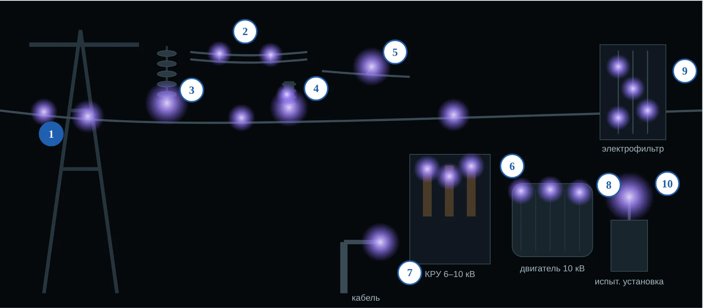
Техника высоких напряжений · тема 5
Почему тонкий провод светится и гудит, куда уходит энергия и как корону держат под контролем — от ЛЭП до лобовых частей двигателя
13.03.02 · интерактив «Коронный разряд» · по учебнику Важова и Лавриновича, разд. 1.1.7 и 1.1.11
Цели темы
1
Объяснить, когда и где зажигается корона, и посчитать Eк и Uк
2
Отличить униполярную корону от биполярной, положительную от отрицательной
3
Объяснить роль объёмного заряда и вид ВАХ короны
4
Прочитать рис. 1.12 и вольт-кулоновую характеристику
5
Посчитать потери на корону и учесть погоду за год
6
Найти корону на оборудовании и выбрать меру защиты
Вопрос на всю пару
К концу пары ответ будет в трёх словах: погода, полярность, объёмный заряд.
Связь с темами 1–4
Тема 1
Неоднородное поле: у тонкого провода Emax во много раз выше средней
Тема 2
Лавина и условие самостоятельности — но только у провода
Тема 3
Стример стартует, но гаснет, не дойдя до земли, — стримерная корона
Тема 4
Плотность воздуха δ: мороз — корона позже, жара и высота — раньше
1 · Что такое корона
Резко неоднородное поле: Kн = Emax/Eср ≥ 3. Электрод малого радиуса кривизны — провод, острие, кромка шины.
При Kн < 3 короны нет: разряд сразу переходит в пробой.
Светящийся ореол у электрода, треск и гул, радиопомехи, запах озона.
Горит в широком диапазоне давлений — от атмосферного до сотен атмосфер.
1 · Как выглядит · вкладка 0
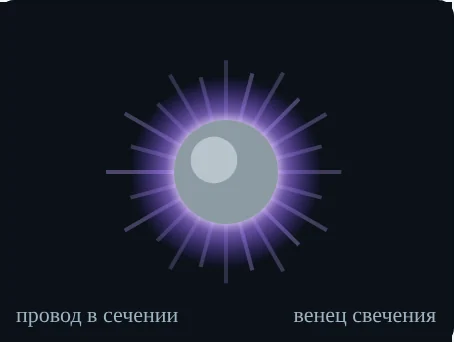
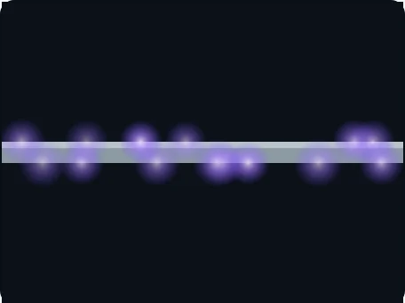
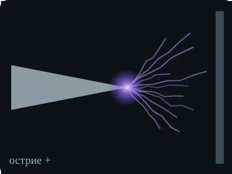
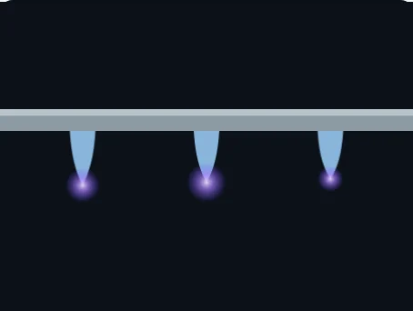
Светится только чехол. Излучение в основном ультрафиолетовое (азот, ~300–400 нм): глазом — ночью, днём — УФ-камерой.
1 · Чехол и внешняя зона · вкладка 1
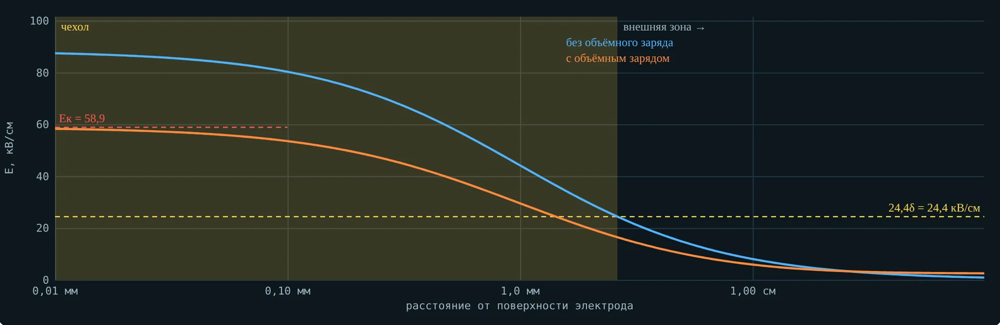
Чехол — где E выше ≈ 24δ кВ/см: ударная ионизация, свечение.
Внешняя зона — ионизации нет; ионы знака провода дрейфуют к другому электроду и образуют объёмный заряд.
Оранжевая линия — поле с объёмным зарядом: у провода оно держится на Eк.
1 · Начальная напряжённость короны
Eк = 30,3·m·δ·(1 + 0,298/√(δr0)), кВ/см · r0 < 1 см (1.31)
Eк = 24,5·m·δ·(1 + 0,613/(r0δ)0,4) · r0 > 1 см (1.32)
| Символ | Смысл |
|---|---|
| r0 | радиус провода, см — чем тоньше, тем больше Eк и тем меньше Uк |
| m | гладкость: 1 — полированный, 0,85…0,92 — витой провод |
| δ | относительная плотность воздуха (тема 4) |
1 · Пример · задачи 1, 2, 5
| Провод и условия | Формула | Eк, кВ/см |
|---|---|---|
| r0 = 0,5 см, гладкий, δ = 1 | Пик | 43,1 |
| r0 = 0,5 см, витой m = 0,85, лето +28 °C (δ = 0,96) | Пик | 35,4 — на 18 % ниже |
| r0 = 0,1 см, гладкий, δ = 1 | Пик | 58,9 |
| r0 = 2 см, гладкий, δ = 1 | Залесский | 35,9 |
Расчёт первой строки: 30,3·(1 + 0,298/√0,5) = 30,3·1,421 = 43,1 кВ/см.
1 · Напряжение зажигания Uк
Uк = Eкr0ln(R/r0)
r0 = 1 мм, R = 10 см: 27,1 кВ
Uк = Eкr0ln(2h/r0)
r0 = 1 см, h = 10 м: 299 кВ амплитуды
Uк = 21,2δr0ln(S/r0)m1m2
ф. 1.37, кВ действующего; m2 — погода
Острие — плоскость: поле у острия E = U/(r·ln(1 + 4S/r)) (ф. 1.27).
1 · Погода и поверхность
| Условия | δ | Uк провода r0 = 1 см, h = 10 м |
|---|---|---|
| Нормальные: 760 мм рт. ст., +20 °C | 1,00 | 299 кВ |
| Апатиты, мороз −30 °C, 775 мм рт. ст. | 1,23 | выше: ≈ 360 кВ |
| Высота 2000 м, +10 °C | 0,81 | ниже: ≈ 250 кВ |
| Дождь, иней, изморозь | — | m2 < 1: заметно ниже |
Учебник Важова: атмосферные осадки резко снижают начальное напряжение короны.
1 · Загрязнение провода · вкладки 1 и 4
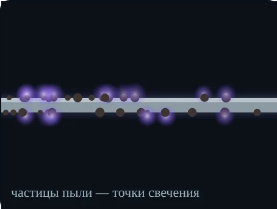
Сажа, зола, рудная пыль — бугорки с усиленным полем: корона загорается раньше и распадается на точки
| Провод r0 = 1 см, h = 10 м | mитог | Uк |
|---|---|---|
| Гладкий, чистый | 1,00 | 299 кВ |
| Витой | 0,90 | 269 кВ |
| Витой, промзона | 0,765 | 229 кВ |
| ВЛ 220 кВ за год: чистая → промзона | 10,7 → 52 МВт·ч/км | |
kзагр = 0,92 (запылённый) и 0,85 (промзона) — ориентировочное допущение; реальное значение дают измерения.
1 · Что дальше с напряжением
U < Uк
Отдельные лавины, ток практически нулевой
U ≥ Uк
Лавинная корона: чехол светится, ток растёт ≈ U(U − Uк)
Выше
Стримерная корона: стримеры стартуют и гаснут, не дойдя до другого электрода
Ещё выше
Стример перекрывает промежуток: искра, при мощном источнике — дуга
Учебник Важова, разд. 1.1.7. После зажигания поле у провода само себя ограничивает — объёмный заряд держит его на Eк.
2 · Постоянное напряжение · вкладка 2
Коронирующие электроды одной полярности (рис. 1.10).
В чехле рождаются заряды обоих знаков. Знак провода выходит наружу, противоположный уходит в провод.
Вся внешняя зона заполнена ионами знака провода — это объёмный заряд.
2 · Полярность
| Провод + | Провод − | |
|---|---|---|
| Что поддерживает | фотоионизация в объёме газа | фотоэффект с катода (острия) |
| Внешняя зона | положительные ионы | электроны прилипают к O2 — отрицательные ионы |
| Вид | ровная светящаяся оболочка | отдельные точки; на острие — импульсы Тричела |
| Острие — плоскость | пробой в 2…2,5 раза раньше | устойчивая корона до высокого U |
2 · Биполярная корона · вкладка 2
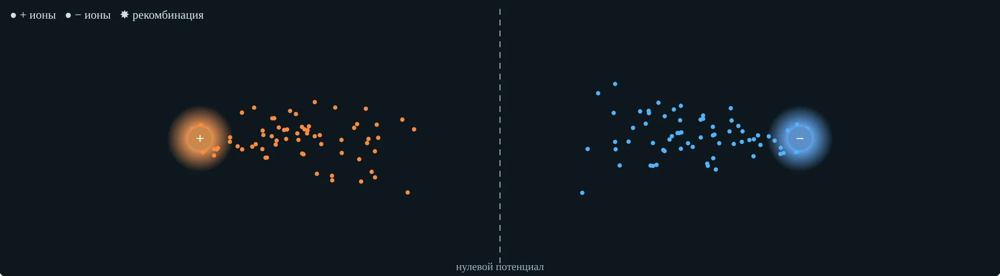
Провода разной полярности — например, «плюс» и «минус» линии постоянного тока (рис. 1.11).
На линии нулевого потенциала рекомбинирует лишь часть ионов. Проникшие нейтрализуют объёмный заряд чужой зоны.
Чтобы держать поле на Eк, чехол выдаёт дополнительный заряд — ток растёт.
2 · Объёмный заряд
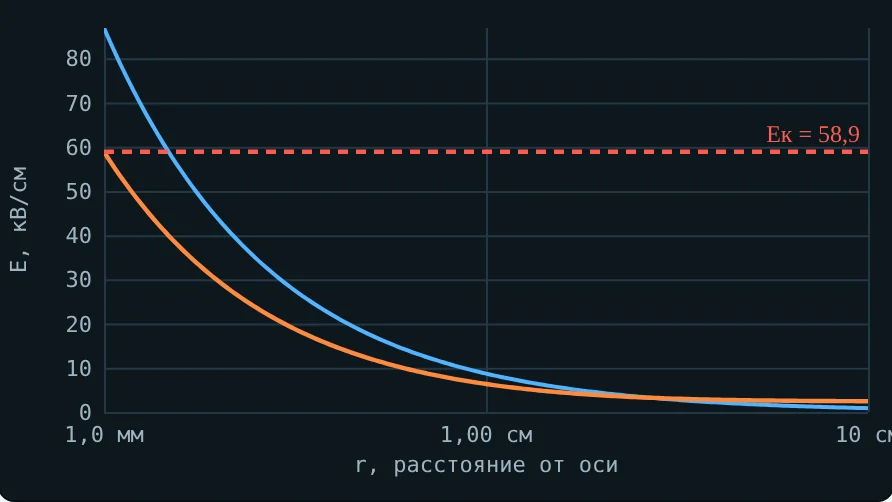
Голубая — поле без объёмного заряда: у провода больше Eк.
Оранжевая — с объёмным зарядом: у провода ровно Eк, у трубы выше.
«Лишнее» напряжение уходит не на ионизацию, а на дрейф ионов — корона сама себя ограничивает.
2 · Что с током · задача 11
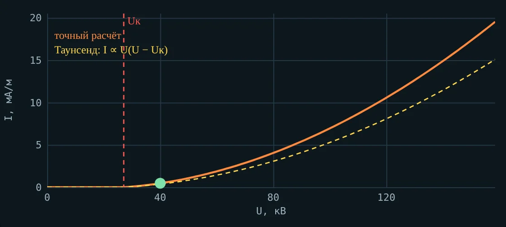
I = 8πε0μU(U − Uк) / (R²ln(R/r0))
Формула Таунсенда для коаксиала, ток на метр длины. μ — подвижность ионов.
r0 = 1 мм, R = 10 см, U = 40 кВ, μ = 2·10⁻⁴: I ≈ 0,5 мА/м.
Полезная корона
Отрицательная корона устойчивее и даёт больший ток до искрового пробоя — поэтому фильтры ТЭЦ, обогатительных фабрик и металлургии работают на минусе (случай 6).
3 · Переменное напряжение · вкладка 3, рис. 1.12
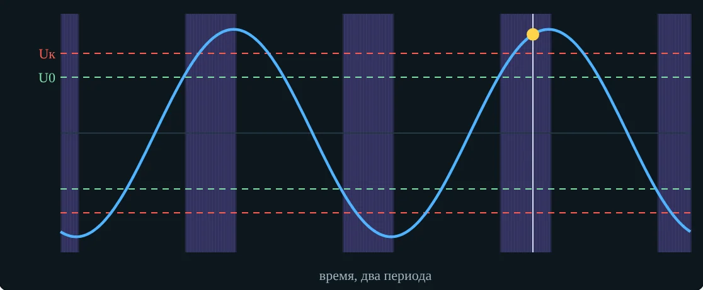
Первое зажигание — при Uк.
После максимума корона гаснет, но объёмный заряд остаётся.
Следующие зажигания — уже при U0 < Uк: объёмный заряд помогает обратной полярности.
3 · Рис. 1.12 по шагам
| Момент | Что происходит |
|---|---|
| t1 | U = Uк: зажигается положительная корона, образуется чехол |
| t1–t2 | U растёт до Uмакс, но E на проводе = Eк: избыток уходит в положительный объёмный заряд |
| t2 | U начинает падать — корона гаснет; заряд уходит от провода на 40…100 см |
| t4 | при U0 ≪ Uк зажигается отрицательная корона |
| t4–t5 | отрицательные ионы компенсируют положительный объёмный заряд |
| t5–t6 | копится отрицательный объёмный заряд; в t6 корона гаснет — цикл повторяется |
3 · Токи · рис. 1.12, б
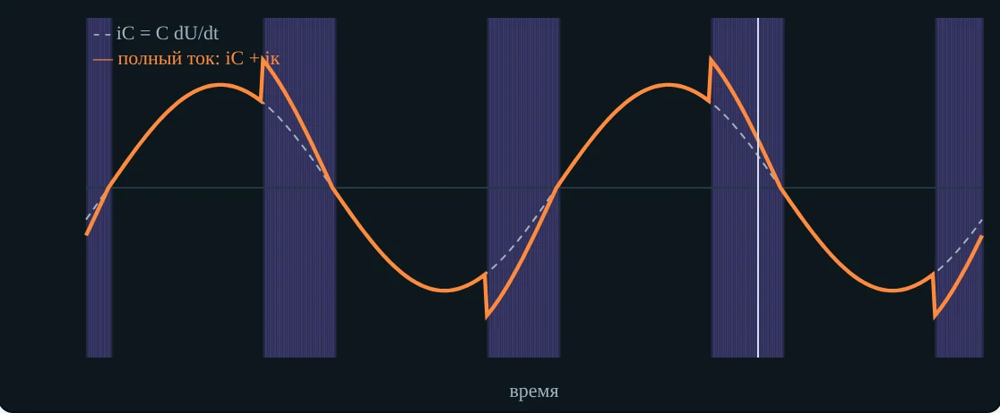
iC = C·dU/dt (1.33)
Пики тока короны длятся, пока корона горит: t1–t2, t4–t5…
На переменном напряжении корона интенсивнее, потери больше, чем на постоянном.
3 · Вольт-кулоновая характеристика · задача 9
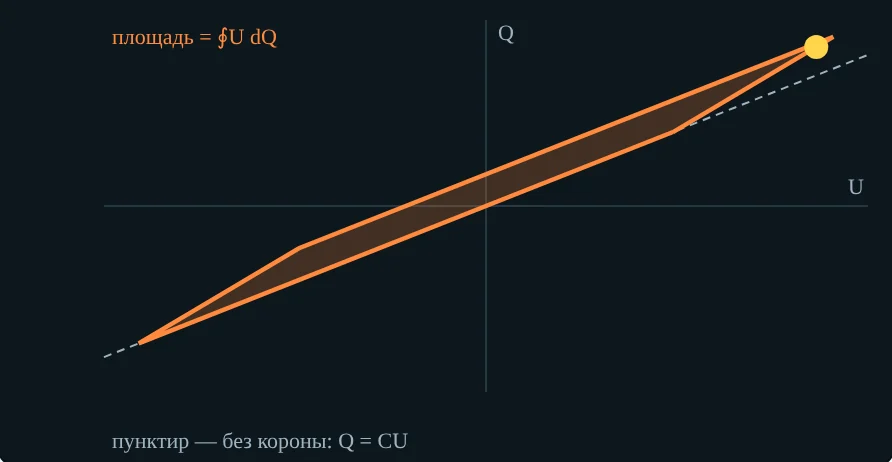
W = ∮U dQ (1.34)
P = f·∮U dQ (1.35)
Без короны — прямая Q = CU, площадь ноль. Так потери измеряют: осциллографируют Q(U).
0,24 Дж/м за период при 50 Гц → 12 кВт/км.
4 · Потери на корону · вкладка 4
P = (241/δ)(f + 25)√(r0/S)(Uф − Uк)²·10⁻⁵, кВт/(км·фаза)
Uк = 21,2·δ·r0·ln(S/r0)·m1·m2, кВ
Uф, Uк — действующие, кВ; r0, S — см; m1 — гладкость, m2 — погода.
В учебнике (ф. 1.36) напечатано 24,1 — у Пика коэффициент 241.
4 · Пример · задача 7 и случай 1
| АС-300, r0 = 1,2 см, S = 7 м, m1 = 0,9 | Хорошая погода | Дождь, m2 = 0,8 |
|---|---|---|
| Uк = 21,2·1,2·ln 583·0,9·m2 | 145,8 кВ | 116,7 кВ |
| Uф = 127 кВ | ниже Uк — короны нет | выше Uк — корона |
| P по Пику, кВт/(км·фаза) | 0 | 0,80 (на линию 2,4 кВт/км) |
P = 241·75·√(1,2/700)·(127 − 116,7)²·10⁻⁵ = 241·75·0,0414·107·10⁻⁵ = 0,80.
4 · Погода за год · ф. 1.41, табл. 1.3 · задача 8
| Погода | Часов | P, кВт/км | кВт·ч/км |
|---|---|---|---|
| Хорошая | 7120 | 0,05 | 356 |
| Сухой снег | 800 | 0,4 | 320 |
| Дождь | 500 | 1,2 | 600 |
| Изморозь | 340 | 3,0 | 1020 |
| Итого | 8760 | 2296 |
ΣPк = Σ Pкi·ψi
Наибольшие потери в единицу времени — при изморози (учебник Важова).
Продолжительность групп — для средней полосы; в Заполярье изморози и гололёда больше.
4 · Расщепление фазы · рис. 1.13 · задача 12
Один провод АС-400
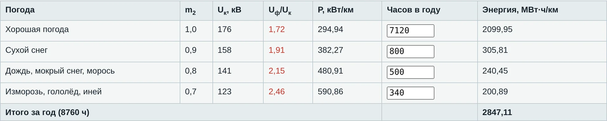
Три провода, радиус расщепления 23 см
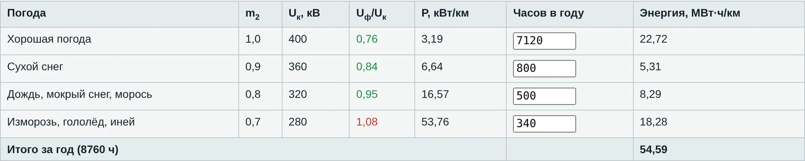
P = 2,4·10⁻⁶·Um²·exp[8,7(Um/Uк − 0,53)], кВт/км (1.40)
5 · Корона на оборудовании · вкладка 5
| Где | Чем грозит | Мера |
|---|---|---|
| Провод ЛЭП | потери, шум, радиопомехи, озон | больше сечение, расщепление |
| Гирлянда, полимерный изолятор | эрозия оболочки, затем трекинг | экранные и защитные кольца |
| Шины и болты КРУ 6–10 кВ | озон + влага → азотная кислота | скругление, колпачки, покрытия, подогрев |
| Концевая муфта кабеля | ЧР и пробой у края экрана | регулятор поля: конус, трубка |
| Лобовые части двигателя | белый налёт, разрушение лака | противокоронное покрытие, фильтр dU/dt |
| Испытательная установка | ложные сигналы ЧР | тороиды, трубы большого диаметра |
5 · Как ищут корону
До мер
После мер
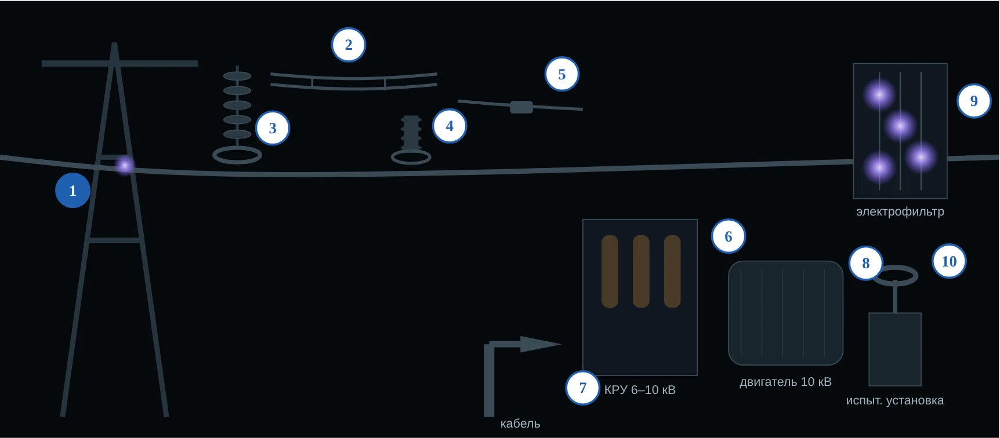
Корона излучает в ультрафиолете — УФ-дефектоскоп выделяет её на дневном фоне. После мер светится только электрофильтр: там корона нужна.
Практика · мини-опыты под вкладками 1–4
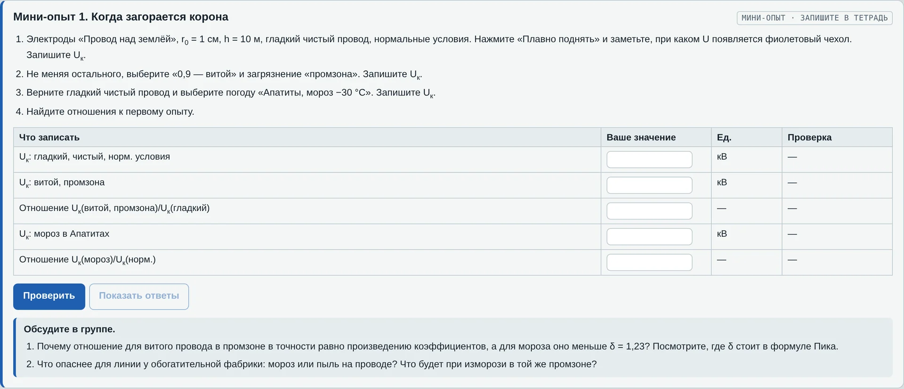
1. Зажигание. Uк: чистый, витой в промзоне, мороз. Отношения 0,765 и 1,20
2. Полярность. I−/I+ = 1,33 = μ−/μ+; рост тока при двойном превышении
3. Q(U). Потери при 1,2 / 1,5 / 1,8Uк и роль «роста ёмкости»
4. Год. ВЛ 220 кВ: север (700 ч изморози) — ×1,74, промзона — ×4,9
Практика · вкладки 6–8 и пособие студента
1. Eк гладкого провода
2. Летний витой провод
3. Коаксиальная модель
4. Провод над землёй
5. Толстый провод: Залесский
6. ВЛ 110 кВ в хорошую погоду
7. ВЛ 220 кВ в дождь
8. Годовые потери
9. Площадь Q(U)
10. Повторное зажигание U0
11. Ток униполярной короны
12. Потери на ВЛ 500 кВ
Проверьте себя
Итог темы 5
Осадки снижают Uк через m2: линия гудит в туман, а изморозь даёт почти половину годовых потерь
Отрицательная корона устойчивее — на ней работают электрофильтры
Держит E на проводе у Eк, задаёт ВАХ, U0 < Uк и вольт-кулоновую характеристику
Дальше — тема 6: пробой жидких диэлектриков. Домашняя работа: задачи 7–12, тест во вкладке 8.